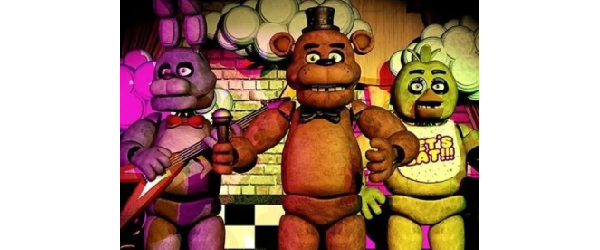

The first game in the *Five Nights at Freddy's* franchise brings the player into the role of Mike Schmidt, a night security guard at a pizzeria where animatronics come to life at night, attacking anyone who gets close. The goal is to survive the nights using security cameras and security systems. As each night progresses, the intensity of the animatronics' attacks increases. It is revealed that the animatronics are possessed by the spirits of murdered children, victims of a mysterious man known as William Afton, also referred to as the Purple Man. Mike's goal is to survive until 6 AM, avoiding being caught by the animatronics, who would mistake him for a bare endoskeleton and attempt to "correct" this by putting him inside an animatronic suit, which would be fatal.
